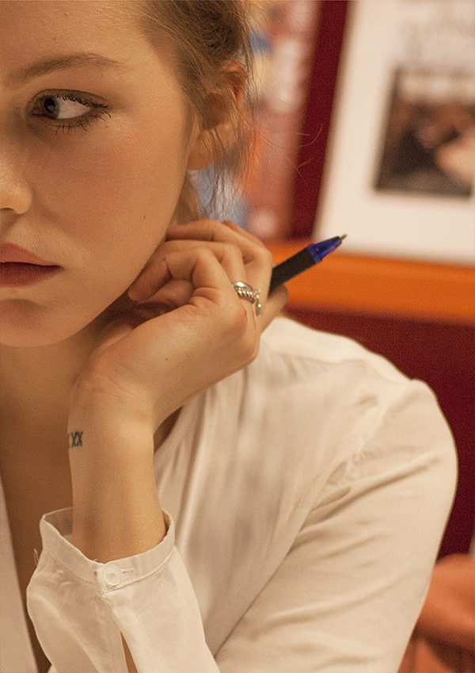
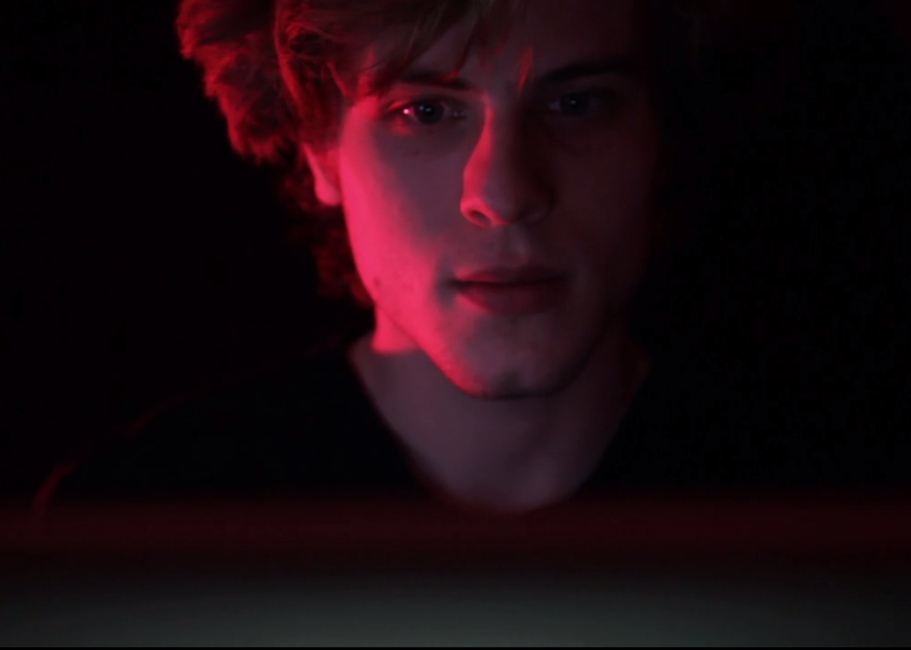

Site du film
Contexte
Hétic - Project scolaire
Rôle
Front-end developer
Technologies utilisées
HTML / CSS / Js
Date
Février 2015
Équipe
Valentin Cervellera, Claire Fénart, Jérémy Gacougnolle, Florent Grandval, Audrey Turquand, Augustin Menou, Sylvain Mroczko et Nicolas Thomas
Concept
Dans les yeux de l'autre est un court métrage entièrement réalisé en deux semaines par une équipe de 9 héticiens.
www.danslesyeuxdelautre.frdesktop
/
mobile


